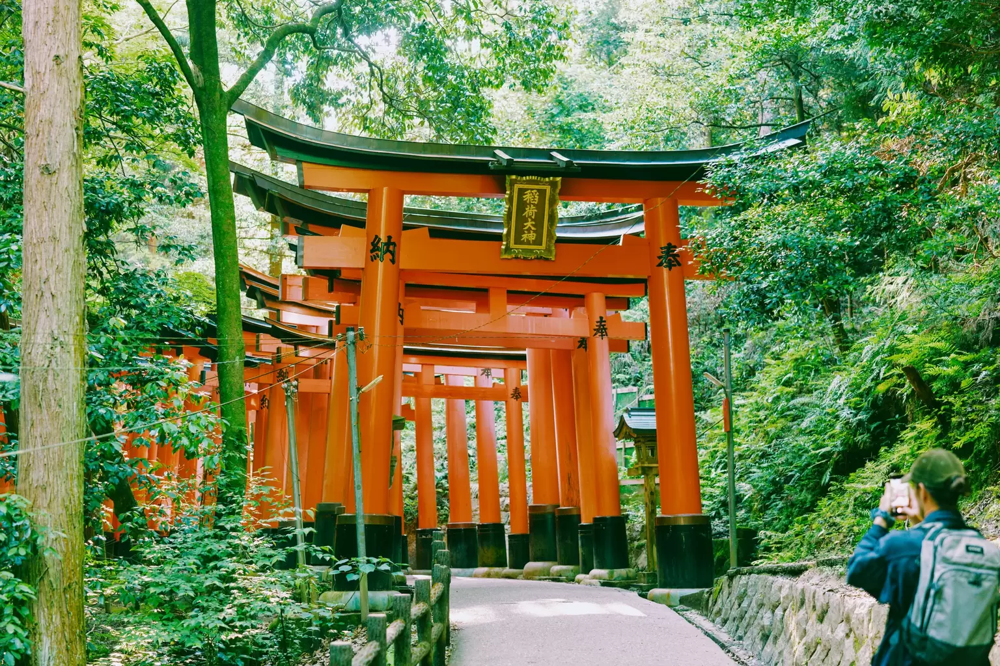

JAPAN • SAKURA • TRADICIJA
Kyoto je grad koji savršeno spaja tradicionalni Japan, prelepe hramove, mirne vrtove i čarobnu atmosferu cvetanja sakure.
Otkrij Kyoto →01 — O GRADU
Kyoto je jedan od najpoznatijih gradova Japana i predstavlja pravo mesto za upoznavanje sa japanskom kulturom i tradicijom.
Grad je bio carska prestonica Japana više od hiljadu godina. Danas je poznat po istorijskim hramovima, tradicionalnim kućama, vrtovima i ulicama koje podsećaju na stari Japan.
Posebnu atmosferu Kyoto dobija tokom proleća, kada cvetaju sakure i čitav grad dobija prepoznatljivu roze boju.
godina istorije
hramova i svetilišta
poznat po sakurama
zemlja izlazećeg sunca
02 — ŠTA POSETITI
Kyoto je pun zanimljivih mesta koja pokazuju različite strane japanske kulture.
Poznato svetilište sa hiljadama crvenih torii kapija koje vode kroz šumu.
Zlatni paviljon okružen predivnim vrtovima i mirnim jezerom.
Arashiyama je poznata po visokoj bambusovoj šumi i neverovatnoj prirodi.
Jedno od poznatih mesta za uživanje u pogledu na cvetanje japanskih trešanja.

03 — MOJ IZBOR
Kyoto mi je zanimljiv zato što nije samo turistička destinacija. To je grad u kojem se može osetiti istorija Japana i upoznati način života koji se razlikuje od našeg.
Prelepa japanska arhitektura
Mirni vrtovi i priroda
Čarobna atmosfera sakure
Tradicionalna japanska kultura
Kyoto je mesto gde bih voleo da zastanem, uživam u trenutku i upoznam Japan na drugačiji način.
— MOJA OMILJENA DESTINACIJA